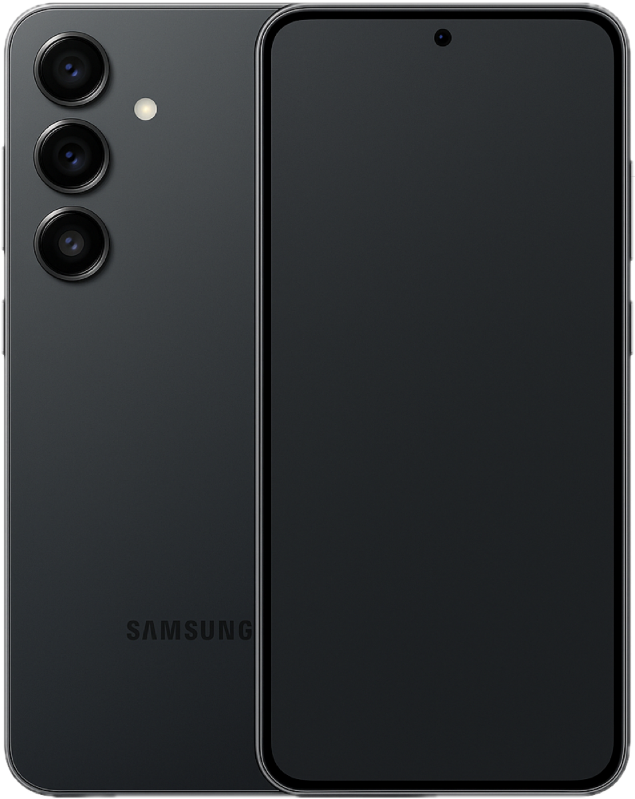

מה זה Galaxy AI ואיזה דגמים מקבלים אותו?
Galaxy AI היא מטרייה שמכסה מגוון פיצ'רים AI שסמסונג בנתה בשיתוף עם Google (Gemini) ו-Microsoft (Bing). חלק מהפיצ'רים רצים מקומית על שבב Snapdragon 8 Elite של Galaxy S25, וחלק בענן. הפיצ'רים זמינים ב-Galaxy S24, S25, Z Fold 6 ו-Z Flip 6 ומעלה, ועודכנו גם לדגמי S23 בחלק מהיכולות. ב-Galaxy S25 Ultra, שבב ה-AI מהיר ב-40% מהדור הקודם ומאפשר עיבוד מהיר יותר של תמונות ווידאו.

Circle to Search ו-Live Translate
Circle to Search הוא הפיצ'ר שמשתמשים מדברים עליו בקבוצות הווצאפ: לחיצה ארוכה על כפתור הבית מאפשרת להקיף כל אובייקט על המסך — מוצר, בגד, מקום, טקסט — ולחפש אותו בגוגל מיד. עובד בכל אפליקציה, כולל אינסטגרם וטיקטוק. מאוד שימושי לקניות ולזיהוי מקומות.
Live Translate מתרגם שיחות טלפון בזמן אמת: שני הצדדים מקבלים תרגום מיידי לשפתם. תרגום עברית–אנגלית עובד יפה. גם ערבית ורוסית נתמכות — שימושי לעסקים ישראלים שעובדים עם ספקים בחו"ל.
Chat Assist ו-Note Assist
Chat Assist פועל בתוך כל אפליקציית מסרים: לחיצה על כפתור AI מאפשרת לשנות את הטון של הודעה (פורמלי, ידידותי, קצר), לתרגם, ולתקן שגיאות. עברית נתמכת — אפשר לכתוב הודעה גסה ולבקש מה-AI לנסח אותה מחדש בצורה מקצועית. שימושי מאוד לתכתובות עסקיות.
Note Assist באפליקציית Samsung Notes מתמלל הקלטות קוליות, מסכם פגישות, מתרגם פתקים ויוצר תבניות. דיוק תמלול בעברית עומד על כ-85% בסביבת משרד — לא מושלם, אבל שימושי לתיעוד בסיסי.
AI Photo Editing — מחיקת אנשים ועצמים
Generative Edit של Galaxy S25 הוא אחד הכלים החזקים ביותר לעריכת תמונות בסמארטפון:
- Remove Object — מוחק אנשים, עצמים ורכבים ומשלים את הרקע בצורה טבעית
- Generative Edit — הזזת אובייקטים בתמונה, שינוי זווית, הרחבת פריים לתמונות רחבות יותר
- Remaster — שיפור תמונות ישנות ומטושטשות
- Portrait Studio — שינוי סגנון לתמונות פורטרט: cartoon, 3D, sketch
כל תמונה שנערכה עם AI מסומנת עם watermark קטן לשקיפות. השוואה לאייפון: עריכת ה-AI של גלקסי S25 מנצחת את Apple Intelligence בגמישות ובאיכות המילוי.
מחיר ומסקנה
Galaxy S25 מחיר בישראל: החל מ-3,799 ש"ח ל-S25, 4,399 ש"ח ל-S25+, ו-5,599 ש"ח ל-S25 Ultra. כל הדגמים כוללים את מלוא פיצ'רי Galaxy AI. אם אתם בין Pixel 9 לבין S25 — ה-S25 מנצח בשימושיות יומיומית בשוק הישראלי. Chat Assist, Live Translate ו-Circle to Search לבדם מצדיקים את הבחירה.